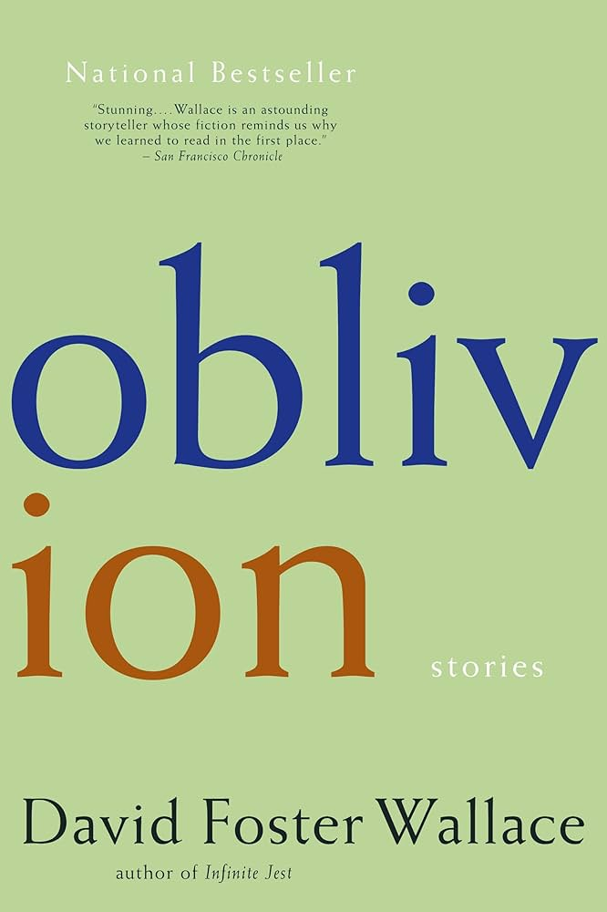

| Name | Cover | Author | Summary |
|---|---|---|---|
| Middlesex | Jeffrey Eugenides | A multi-generational family saga told by the main character Cal, an intersex man describing genetic and cultural factors that came to shape his identity. | |
| The Goldfinch |  |
Donna Tartt | After surviving a terrorist attack at a museum in which he loses his mother, a boy steals a famous painting. What follows is a coming-of-age story told through the lens of art, loss, and crime. |
| Never Let Me Go |  |
Kazuo Ishiguro | A haunting story about students at a British boarding school who slowly uncover the dark truth about their purpose, and come to accept it in different ways. |
| Oblivion |  | David Foster Wallace | A collection of dense, funny short stories that explore modern disconnection and inner lives. It was DFW's third and last short story collection published. |